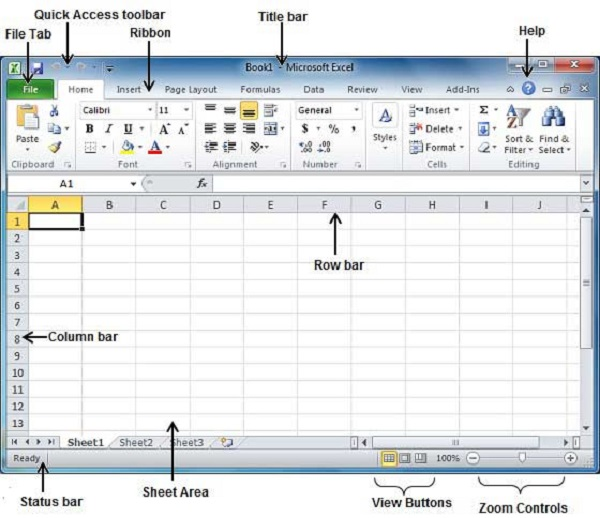
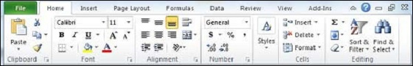

The following basic window appears when you start the excel application. Let us now understand the various important parts of this window.

The File tab replaces the Office button from Excel 2007. You can click it to check the Backstage view, where you come when you need to open or save files, create new sheets, print a sheet, and do other file-related operations.
You will find this toolbar just above the File tab and its purpose is to provide a convenient resting place for the Excel's most frequently used commands. You can customize this toolbar based on your comfort.

Ribbon contains commands organized in three components −
Tabs − They appear across the top of the Ribbon and contain groups of related commands. Home, Insert, Page Layout are the examples of ribbon tabs.
Groups − They organize related commands; each group name appears below the group on the Ribbon. For example, group of commands related to fonts or group of commands related to alignment etc.
Commands − Commands appear within each group as mentioned above.
This lies in the middle and at the top of the window. Title bar shows the program and the sheet titles.
The Help Icon can be used to get excel related help anytime you like. This provides nice tutorial on various subjects related to excel.
Zoom control lets you zoom in for a closer look at your text. The zoom control consists of a slider that you can slide left or right to zoom in or out. The + buttons can be clicked to increase or decrease the zoom factor.
The group of three buttons located to the left of the Zoom control, near the bottom of the screen, lets you switch among excel's various sheet views.
Normal Layout view − This displays the page in normal view.
Page Layout view − This displays pages exactly as they will appear when printed. This gives a full screen look of the document.
Page Break view − This shows a preview of where pages will break when printed.
The area where you enter data. The flashing vertical bar is called the insertion point and it represents the location where text will appear when you type.
Rows are numbered from 1 onwards and keeps on increasing as you keep entering data. Maximum limit is 1,048,576 rows.
Columns are numbered from A onwards and keeps on increasing as you keep entering data. After Z, it will start the series of AA, AB and so on. Maximum limit is 16,384 columns.
This displays the current status of the active cell in the worksheet. A cell can be in either of the fours states (a) Ready mode which indicates that the worksheet is ready to accept user inpu (b) Edit mode indicates that cell is editing mode, if it is not activated the you can activate editing mode by double-clicking on a cell (c) A cell enters into Enter mode when a user types data into a cell (d) Point mode triggers when a formula is being entered using a cell reference by mouse pointing or the arrow keys on the keyboard.
This appears as a very small arrow in the lower-right corner of many groups on the Ribbon. Clicking this button opens a dialog box or task pane that provides more options about the group.